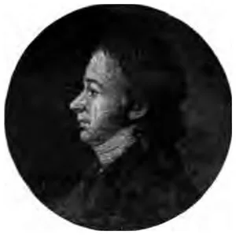

Content of type 'chapter'

Preface & Dedication to Bonaparte
Frontispiece portrait, Palermo centenary title page (1901), Gaetano Fazzari’s biographical and geometrographic preface (pp. III–XVI), Lorenzo Mascheroni’s poetic dedication to General Napoléon Bonaparte (p. 1), and Mascheroni’s own preface laying out the compass-only program across all twelve books (pp. 3–9).
Book I: Preliminaries
Foundations of compass-only geometry (§§ 1–26, pp. 11–18, folios 0040–0047): equilateral circle intersections, point-pair line representation, orthogonal symmetry lemmas, isosceles metric equations, and parallelogram / Apollonius median identities.
Book II: Division of the Circumference
Exact compass-only division of the circumference and circular arcs (§§ 27–63, pp. 19–30, folios 0048–0056 + documented scan lacuna pp. 28–31): opening with the iconic quadrisection of the circle (§ 27) and culminating in the regular pentagon, decagon, Golden Ratio, and 240-part division using only three compass apertures.
Book III: Multiplication & Division of Straight Distances
Linear arithmetic along an un-drawn straight line (§§ 64–70, pp. 31–39, folios 0057–0064): collinear doubling and integer multiples (§§ 64–65), five compass-only solutions for segment bisection (§ 66), binary subdivision (§ 67), exact trisection (§ 68), and division into arbitrary n equal parts (§§ 69–70).
Book IV: Addition, Perpendiculars & Parallels
Affine and orthogonal constructions by compass alone (§§ 71–85, pp. 40–46, folios 0065–0071): adding and subtracting arbitrary distances collinearly (§§ 71–75), erecting and dropping perpendiculars (§§ 76–79), constructing parallels in two circles (§§ 80–81), and pure compass tests for collinearity, orthogonality, and parallelism (§§ 82–85).
Book V: Proportional Distances
Compass-only ratio and proportion calculus (§§ 86–99, pp. 46–50, folios 0071–0075): third proportionals (§§ 86–92), the celebrated 4-circle concentric fourth proportional (§§ 93–95), proportional segment division (§ 96), the compass-only Golden Section (§§ 97–98), and the mean proportional (§ 99).
Book VI: Square Roots
Unified compass-only radical lattices (§§ 100–109, pp. 51–60, folios 0076–0085): generating \sqrt{1} through \sqrt{10} in a single compact figure (§ 100), extending to \sqrt{36} (§§ 101–103), constructing all 25 half-roots \frac{1}{2}\sqrt{1} through \frac{1}{2}\sqrt{25} (§§ 104–107), and refining acute intersection angles (§§ 108–109).
Book VII: Intersections of Lines & Circles
The theoretical climax of La Geometria del Compasso (§§ 110–112, pp. 60–63, folios 0085–0088): locating the intersection of a virtual line with a circle (§§ 110–111) and the intersection of two virtual lines (§ 112) by compass alone—completing the constructive proof of the Mohr–Mascheroni theorem.
Book VIII: Angles & Trigonometric Lines
Angular transfer, multiplication, bisection, and trigonometric line constructions by compass alone (§§ 113–123, pp. 63–68, folios 0088–0093): copying and scaling angles given only by three vertices (§§ 113–117) and constructing sine, cosine, tangent, and secant—plus recovering the arc from each trigonometric line (§§ 118–123).
Book IX: Similar Figures & Regular Polygons
Compass-only similarity, area scaling, and regular polygon synthesis (§§ 124–142, pp. 68–81, folios 0093–0106): scaling arbitrary polygons in prescribed area ratios (§§ 124–127), inscribing and circumscribing regular polygons to a circle (§§ 128–134), and building regular triangles, squares, pentagons, hexagons, octagons, and decagons on a given side (§§ 135–142).
Book X: Determination of Centers & Napoleon’s Problem
Finding centers of circles, arcs, polygons, and three-point circumcircles without a straightedge (§§ 143–150, pp. 82–86, folios 0107–0111): opening with Mascheroni’s celebrated solution to Napoleon’s Problem (§ 143) and closing with the circumcenter through three arbitrary points (§ 150) and Mascheroni–Steiner minimal-instrument duality.
Book XI: Miscellaneous Problems & Platonic Solids
Mascheroni’s virtuoso gallery of advanced compass constructions (§§ 151–192, pp. 86–119, folios 0111–0144): compass proofs of trigonometric addition formulas (§§ 151–160), inscribed squares and octagon scaling (§§ 161–169), four-center ovals (§§ 170–179), the Kepler golden right triangle and all five Platonic solid circumradii (§§ 180–185), and symmetric five-square and seven-hexagon circle packings (§§ 186–192).
Book XII: Problems by Approximation
Mascheroni’s tour de force of applied precision geometry (§§ 193–280, pp. 120–151, folios 0145–0176): twelve chord equations for dividing circles into sexagesimal degrees, arc-minutes, and French 400-grad decimal divisions (§§ 193–266), followed by astonishingly accurate compass solutions to the classic transcendental and cubic problems — rectifying the quadrant (\pi/2), squaring the circle (\sqrt{\pi}), cubing the sphere, and duplicating through octuplicating the cube (\sqrt[3]{2} to \sqrt[3]{8}, reaching two-millionths accuracy in § 276 Sol. II!).
Index of the Twelve Books
Original archival Indice (folio 0177, p. 152) and closing endpapers (0178–0181) of the 1901 Palermo Centenary Edition (fazzari-1901), summarizing all twelve canonical books of Lorenzo Mascheroni’s La Geometria del Compasso.